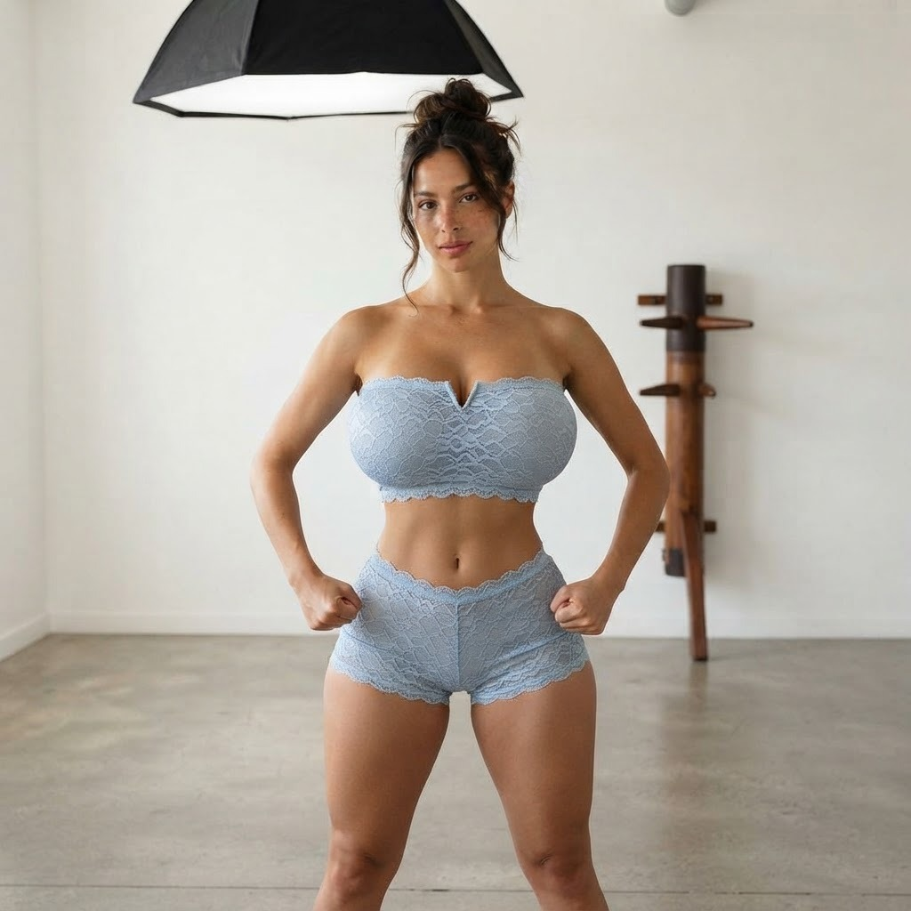
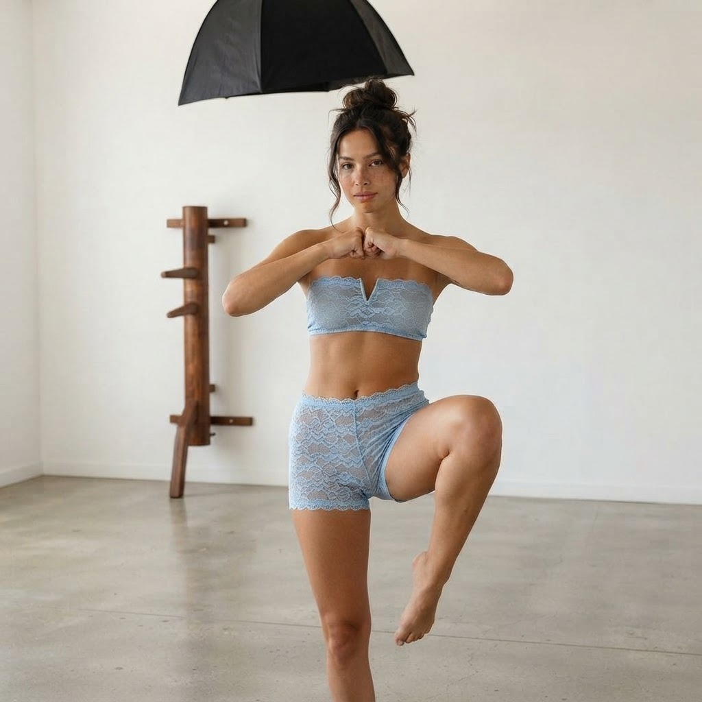
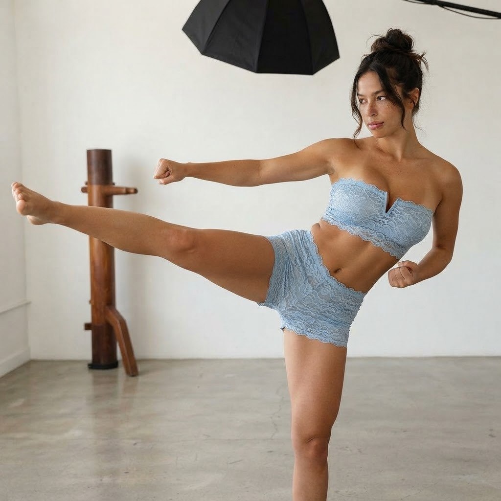
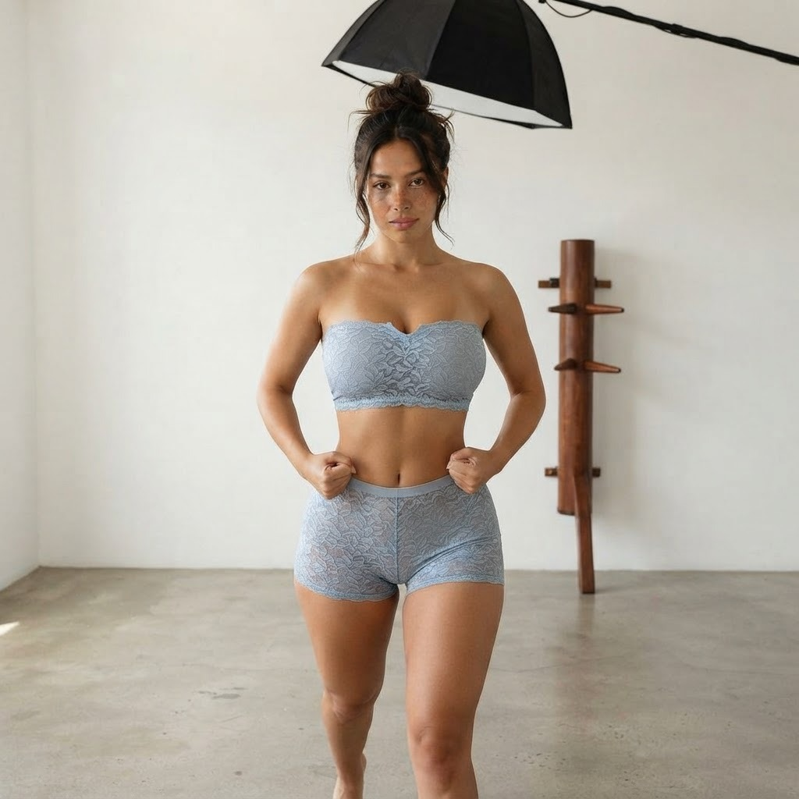
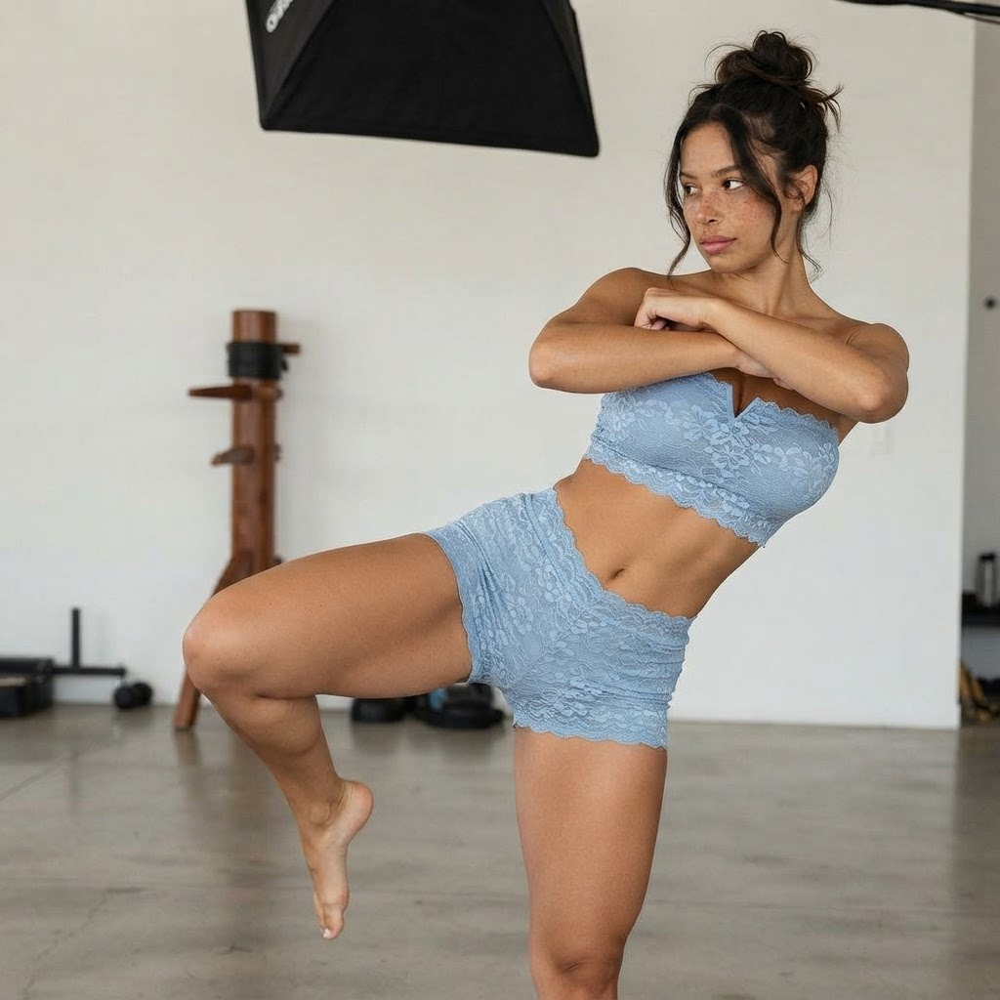
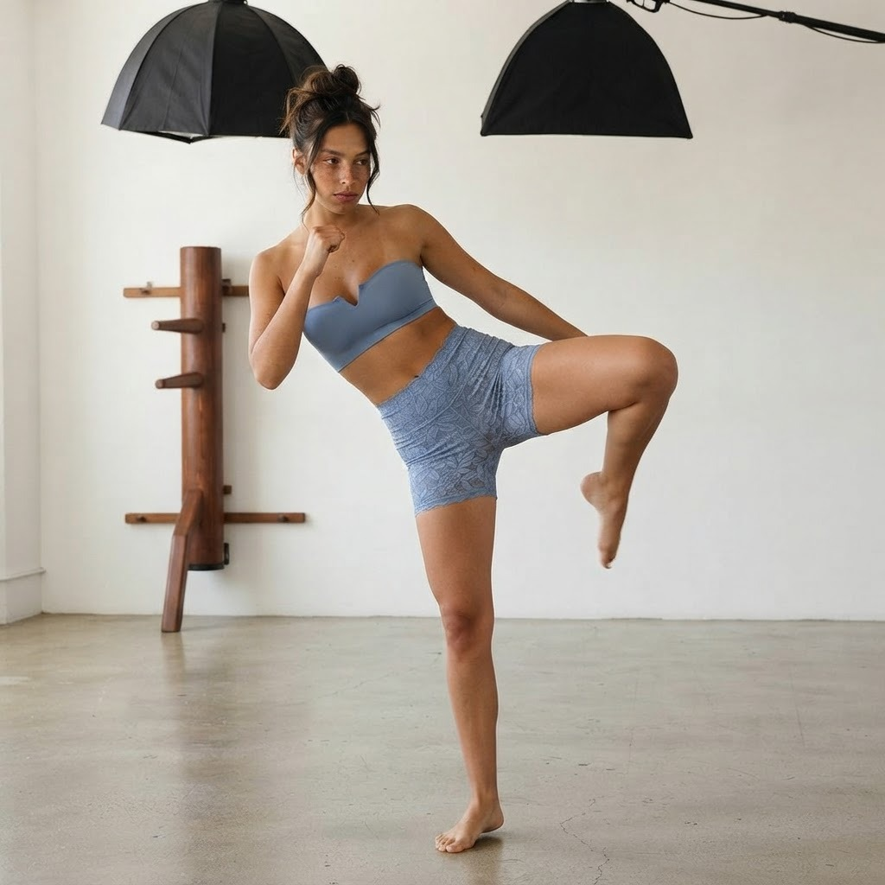
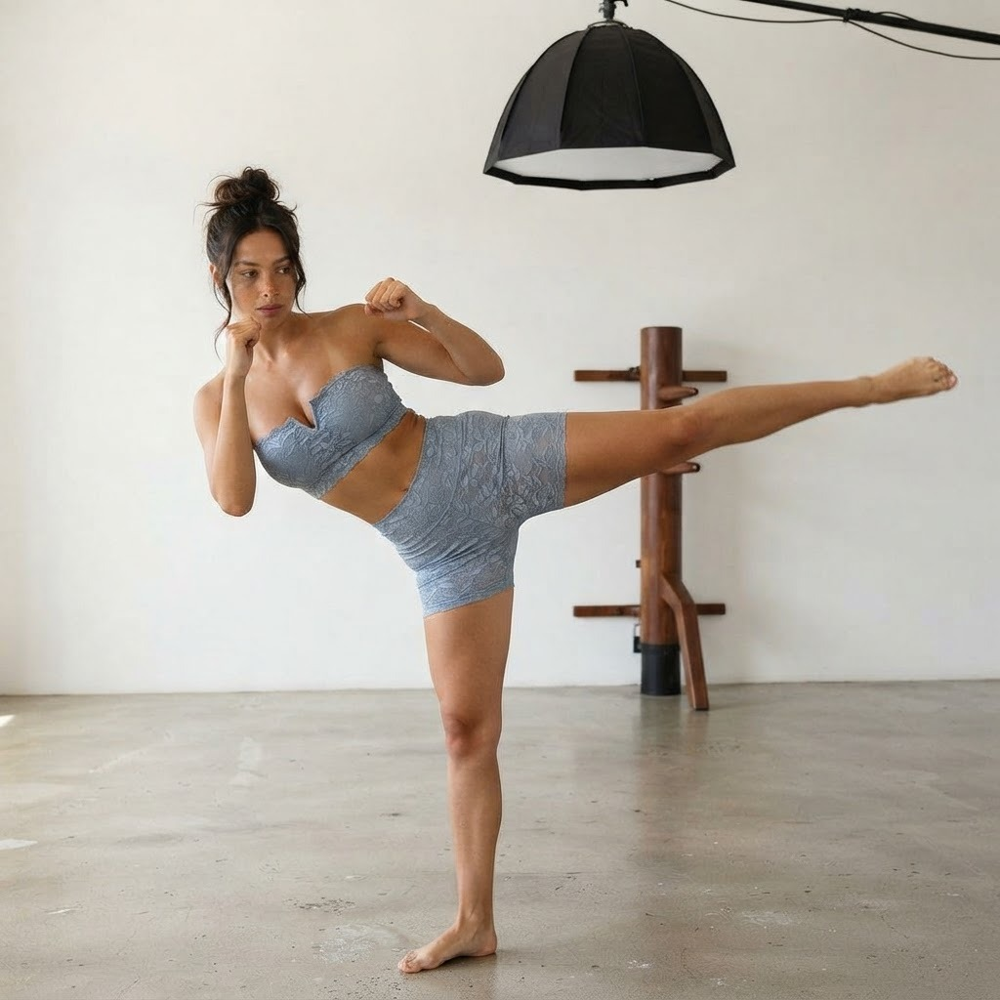
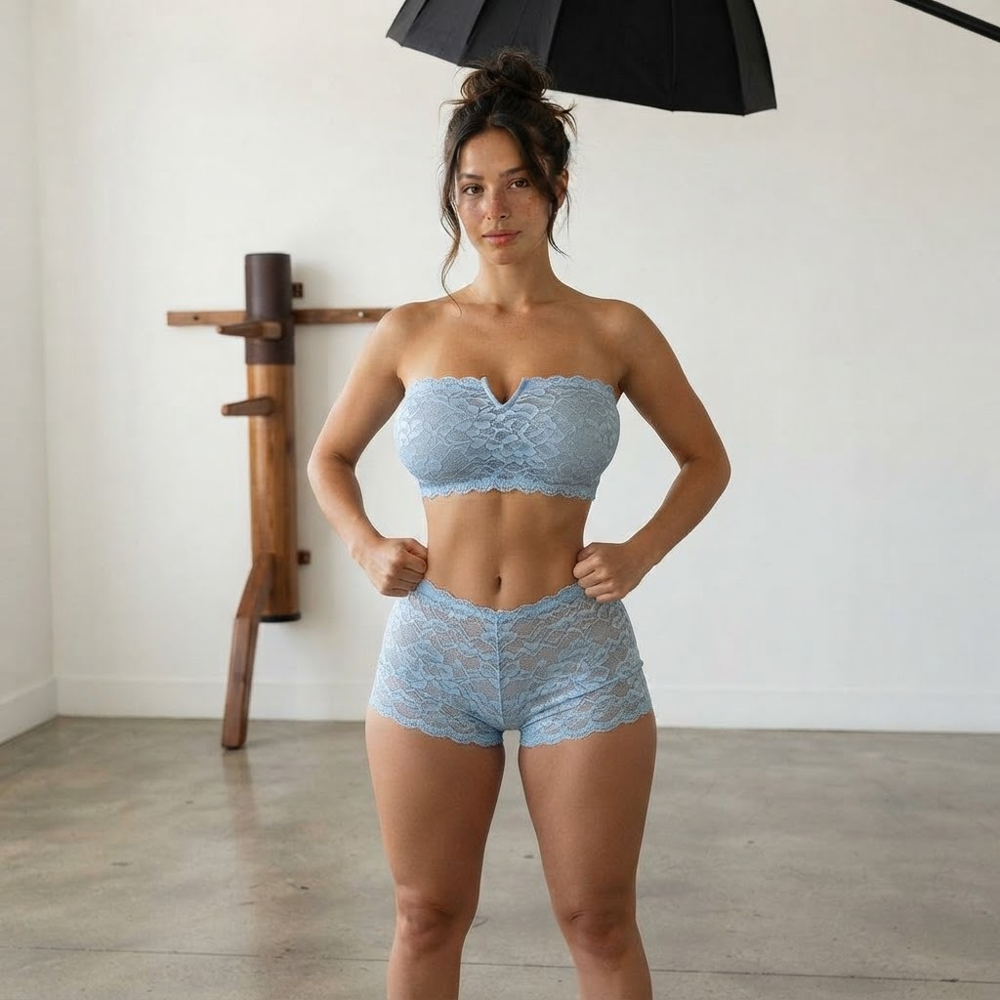

סדרת הדגמות קונג פו עם לאה · 4 שלבים לכל תרגיל
קליפ הדגמה · נוצר על ידי קודה — גורם לא רשמי בסטודיו שימי
בעיטה קדמית היא הבעיטה הבסיסית של הקונג פו. הכוח מגיע מהידוך הברך, לא מנפנוף הרגל. דוחפים מהרצפה דרך כף הרגל הקדמית, מציבים את מרכז המסה מעל רגל התמיכה, וחוזרים לעמדת המוצא באותה נשימה.

שלב 1: עמידת מוצא — רגליים ברוחב הכתפיים, אגרופים במותניים, נשימה יציבה

שלב 2: הידוך — העברת משקל לרגל שמאל, הרמת הברך הימנית לגובה המותן, כף הרגל מקופלת

שלב 3: הארכה מלאה — הרגל נורית ישר לגובה החזה, כרית כף הרגל קדימה, יד שמאל נשלחת לאגרוף

שלב 4: חזרה — הורדת הרגל בשליטה וחזרה לעמידת מוצא, משקל נמוך ומאוזן
קליפ הדגמה · נוצר על ידי קודה — גורם לא רשמי בסטודיו שימי
בעיטת הספין היא בעיטת הכוח הגדולה של הסדרה. סיבוב מלא על רגל התמיכה בונה תנע, העקב מוביל את המכה, והגוף מתקפל קדימה כדי לאפשר לרגל להגיע לגובה המטרה בלי לאבד שיווי משקל.

שלב 1: סיבוב — ציר על רגל שמאל, הגב אל המטרה, מבט מעבר לכתף הימנית

שלב 2: הידוך בסיבוב — הברך מתקפלת עם עקב מכוון למטרה, זרועות צמודות לאיזון

שלב 3: הארכה — הרגל נורית ישר אחורה בגובה החזה, העקב מוביל, ידיים בשמירה

שלב 4: נחיתה — החזרת הרגל לקרקע וחזרה לעמידת מוצא יציבה